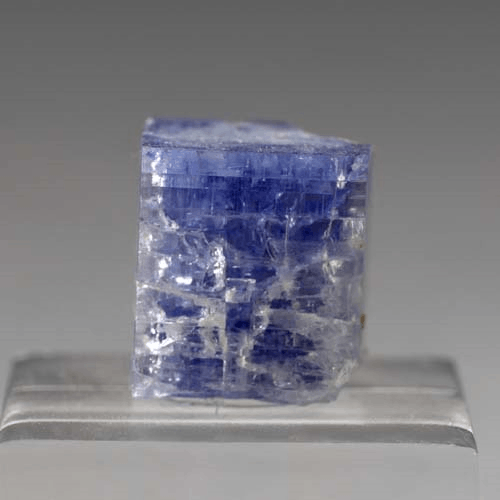
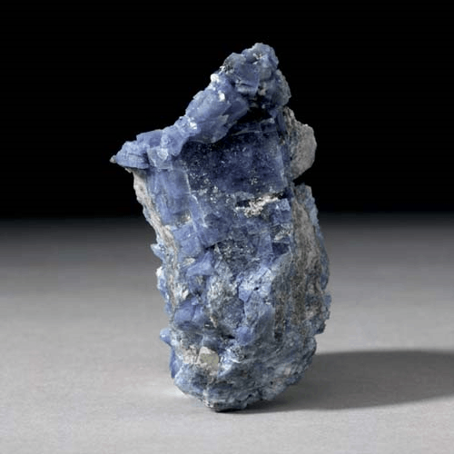
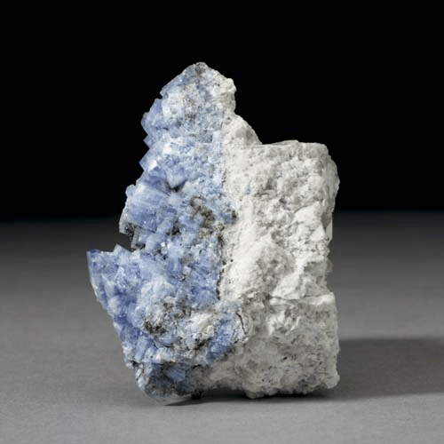

Carletonite - KNa4Ca4Si8O18(CO3)4(F,OH)·H2O
Phyllosilicates




Habit: Pink or pale to dark blue. Crystals prismatic or massive. Vitreous to pearly luster, and may become slightly waxy when exposed to air; transparent to translucent. White streak.
Environment: Found in nepheline syenite in an intrusive alkalic gabbro-syenite complex